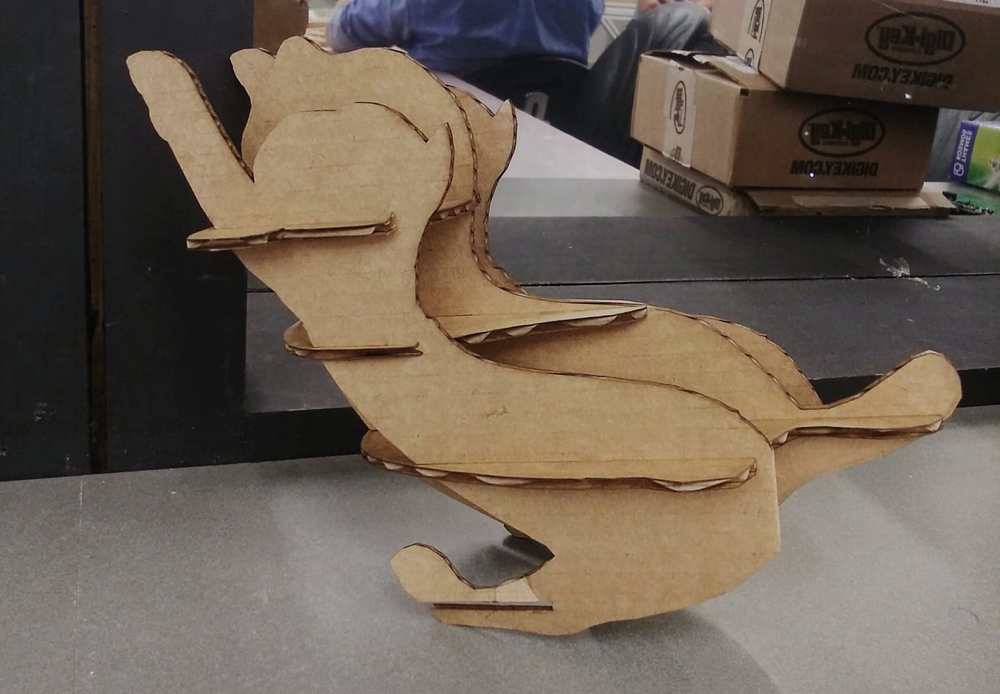

Oct 12, 2021
Assignments
Design, mill, assemble something big
- Don’t use fasteners or glue
- Include curved surfaces
Make something big
Following last week’s experiments with a Singapura cat design I wanted to fabricate an XL cat.
I like the look of 3D slices assembled to form curves and more complex geometries, so I explored various ways of creating them.
After experimenting with Grasshopper contour and Fusion 360 slicer, I decided to use the latter as, while more buggy, it is also more efficient. It is has a convenient autolayout feature. Slot widths and other parameters can be parametrically adjusted, so I could quickly create many designs.
While more pieces would probably look better, I decided to go easy on this after realizing during training that OSB was not a friendly material to work with. I first prototyped my design in cardboard for a sanity check.

I made some minor tweaks and then added the dogbone slots and scaled it up to CNC out of OSB. I maximized the size of the cat for the 4’ x 4’ OSB.
Here is how Anthony and I prepped the file to be machined, using this post processor:
Among the important bits are checking the design, sizing, tabs, onion skin, and calibrating the axes.
After securing the material with composite nails and checking the machine calibration, the design is ready to be machined!
We released the sheet using a crowbar, and tada~
Thus begins the laborious cutting and rasping process. This process took 3 hours and was a great workout. Massive props to Anthony for chipping in (or away?) on this.
I used Fusion 360 to reference my pieces as I was assembling them.
Next morning, a kitty’s first trip to the river:
Another good day to be kitty!
Reflections
- The assembly process can be pretty brutal, especially if the onion skin is thick and there are many tabs (which are also critical for safety).
- OSB tends to split when rasped. Besides the aesthetic aspect, gloves were critical for me to be able to complete this task without also obtaining a thousand splinters.
- I didn’t have bandwidth this week for an overhaul of my initial design. In the future, I would like to CNC something else, perhaps with a ‘nicer’ material. I would also like to explore different finishes.